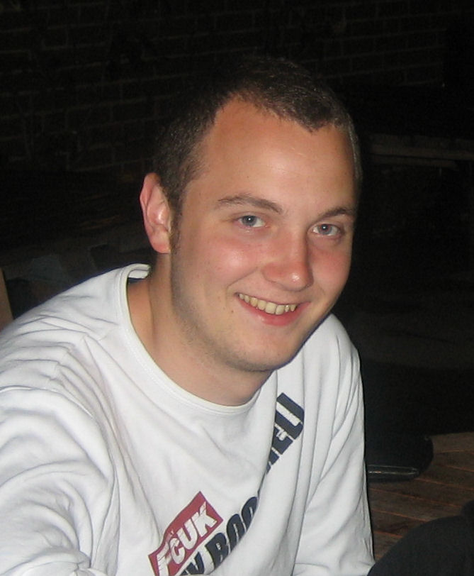

Fintan D. Fairmichael
|  |
Fintan Fairmichael graduated in 2005, earning a BSc in Computer Science at University College Dublin with first class honors. For his final year project, he worked on completing the formal specification of the KOA internet voting tally application using the Java Modeling Language (JML) and the automated extended static checker, ESC/Java2. Fintan then earned an M.Sc. with distinction at the University of Oxford. His master's thesis was the extension of the CodeQuest source code querying tool to include control-flow information and to perform complex analyses, such as a points-to analysis. He has now returned to UCD as an IRCSET fellow and is working on distributed, collaborative, formal methods-based software engineering for his Ph.D. |